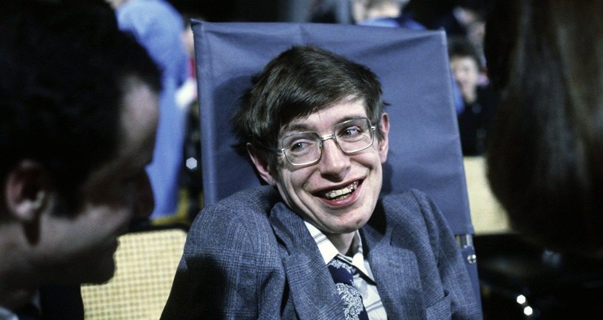
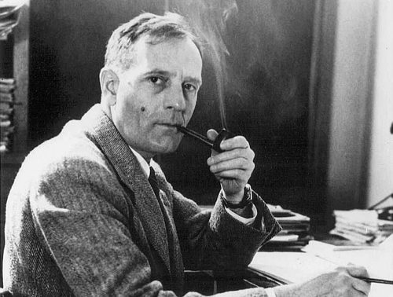
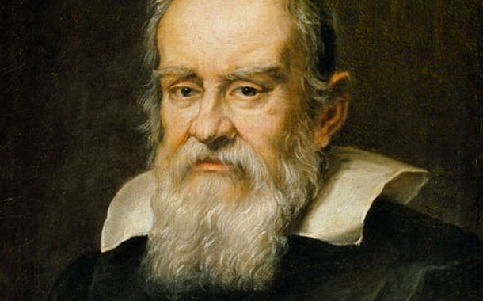
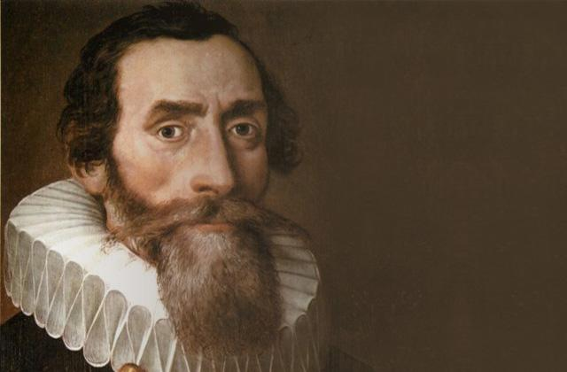

| 1-. | Stephen Hawkings |
Stephen William Hawking (pronunciación en inglés: /stiːvən_ˈhɔːkɪŋ/ ( escuchar); Oxford, 8 de enero de 1942-Cambridge,
14 de marzo de 2018)34 fue un físico teórico, astrofísico, cosmólogo y divulgador científico británico. Sus trabajos
más importantes consistieron en aportar, junto con Roger Penrose, teoremas respecto a las singularidades espaciotemporales
en el marco de la relatividad general y la predicción teórica de que los agujeros negros emitirían radiación,5 lo que se
conoce hoy en día como radiación de Hawking (o a veces radiación Bekenstein-Hawking). Uno de los principales características
de su personalidad fue su contribución al debate científico, a veces apostando públicamente con otros científicos, el caso más
conocido es su participación en la discusión sobre la conservación de la información en los agujeros |
|
|  | |
Video |
|

Astrono Chile
| 2-. | Edwin Hubble |
| Nació en Marshfield, ciudad del Estado Missouri, en el medio oeste americano, el 20 de noviembre de 1889. Hijo de un abogado, ganó una beca para estudiar Derecho en Oxford, en donde permaneció tres años. Se interesó más por la astronomía y regresó a Estados Unidos para cursar estudios de matemáticas y astronomía en la Universidad de Chicago.Se licenció en 1910. Hubble es el hombre que nos hizo ver que nuestra galaxia no es la única en el Universo, sino que hay miles de galaxias y que el Universo se está expandiendo. El descubrimiento de la expansión del Universo llevó a la conclusión de que hubo un momento inicial en el que se produjo lo que ahora llamamos el Big Bang. El Observatorio de Monte Wilson (cerca de Los Ángeles, California) fue fundado en 1904 por George Hale (1868-1938), un astrónomo estadounidense que, como William Herschel, siempre estaba tratando de construir telescopios cada vez mayores. En el año 1917, empezó a funcionar en Monte Wilson el telescopio Hooker, el más potente del mundo en esos años, con un espejo de 2,54 m de diámetro. George Hale, le ofreció inmediatamente un puesto a Edwin Hubble, el cual no pudo incorporarse en Monte Wilson hasta 1919, por haber tenido que servir en la Primera Guerra Mundial. Desde el principio, Hubble fue el principal usuario del telescopio Hooker. Desde principio de su carrera en este Observatorio, dependiente del Instituto Carnegie, Edward Hubble fijó su atención en las nebulosas. Descubrió que muchas de las nebulosas estaban formadas no solamente de gas, sino también por un enorme número de estrellas. En ese tiempo, la palabra galaxia era sinónimo del “universo”. La forma y el tamaño de la galaxia se conocía razonablemente bien, pero nadie sabía qué existía más allá de ella, si es que existía algo. Telescopio Hooker en Monte Wilson Cuando Hubble llegó a Monte Wilson quedó impresionado por la habilidad y plena dedicación de Milton Humason, asistente en las observaciones con el telescopio y le puso a trabajar en la medición de velocidades de galaxias. Juntos constituyeron un equipo sumamente eficaz. Humason publicó numerosos trabajos de investigación y descubrió un cometa que lleva su nombre. Las Cefeidas son estrellas que pulsan con periodos comprendidos entre varios días y varios meses. Cuanto más luminosa es la estrella, más largo es su periodo, de forma que midiendo el periodo puede obtenerse una medida de la luminosidad de la estrella. Una vez conocida la luminosidad de la estrella, puede compararse ésta con el brillo aparente en el cielo para obtener así una medida de la distancia a la estrella. Las Cefeidas son pues como balizas que indican claramente las distancias a las que se encuentran. En el año 1925, Hubble encontró varias cefeidas en la nebulosa de Andrómeda y encontró que estaban a unos 900.000 años-luz. Repitió las mediciones con cefeidas de otras nebulosas y obtuvo también distancias superiores a los 100.000 años-luz que es el tamaño estimado de la Vía Láctea. Dedujo que tales nebulosas se encuentran fuera de la Vía Láctea, muy lejos de ella. Las denominó "nebulosas extragalácticas". Cefeidas En esos años se había establecido que algunas nebulosas se encontraban en la galaxia y que, básicamente, eran gas iluminado por estrellas situadas en su interior; pero los hallazgos de Hubble demostraron que la Nebulosa de Andrómeda, estaba mucho más lejos que las estrellas más remotas conocidas y que era otro mundo, otra galaxia independiente de la nuestra. En los años siguientes, se repitieron hallazgos similares con otras muchas nebulosas, dejando claro que nuestra galaxia era una más de entre toda una multitud de galaxias aisladas, lo que indicaba que el Universo era mucho mayor de lo que se había creído hasta entonces. A continuación, Hubble se dedicó a la clasificación de las galaxias. Identificó las espirales, las elípticas, las lenticulares y las irregulares. Definió una secuencia que aún hoy se conoce como 'secuencia de Hubble'. |
|
|  | |
Video |
|
| 3-. | Nicolas Copernico |
| Nicolás Copérnico nació en el año 1473, en la ciudad de Torun, a orillas del Vístula, en Polonia. Nicolás Copérnico está considerado el artífice del nacimiento de la astronomía, al proporcionar las bases que permitieron a Kepler, Galileo, Brahe y Newton culminar la revolución astronómica con la formulación de la teoría heliocéntrica, según la cual la Tierra no es el centro del universo, sino que la Tierra y los otros planetas giran alrededor del Sol. Este descubrimiento supuso un cambio tan importante en las ideas de la época que, desde entonces, hablamos de "giro copernicano" cuando queremos indicar un gran cambio en las cosas. Durante su infancia y juventud recibió una excelente educación, gracias a su tío Lucas que fue su tutor desde que, a los 10 años, Nicolás quedó huérfano de padre. A partir de 1491 estudió matemáticas y arte en la Universidad de Cracovia, astronomía en Bolonia, medicina en la Universidad de Padua y derecho canónico en Ferrara. Su tío lo introdujo en la canongía, la cual desempeñó el resto de su vida. Durante 25 años, desde que era ayudante del profesor Domenico María de Novara, en Bolonia, Copérnico realizó repetidas y minuciosas observaciones del movimiento de los planetas que podía ver a simple vista. Su gran capacidad de observación le permitió comprobar que Venus y Mercurio siempre estaban cerca del Sol. Además, observó que daban la impresión de que cambiaban de dirección repetidas veces moviéndose hacia atrás. Estos hechos, reiteradamente observados, contradecía la teoría de que estos planetas giraran alrededor de la Tierra; pues si así fuera, a veces deberían situarse lejos del Sol, cosa que nunca ocurría. Y era extraño que cambiaran el sentido de la rotación en algunas épocas del año. Comprendió que las observaciones de los hechos reales se explicaban fácilmente con la teoría de que la Tierra y los planetas giran alrededor del Sol, tal como afirmó en la antigüedad Aristarco de Samos. Venus y Mercurio se ven cerca del Sol porque en realidad se hallan más cerca del Sol. Pensó que si Mercurio está más cerca del Sol, recorre una órbita más corta y se mueve más deprisa que la Tierra, dando la impresión en algunas épocas de moverse hacia atrás porque da varias vueltas alrededor del Sol durante el año terrestre. Eso hace que se tenga la impresión de que cambia de dirección repetidas veces cuando adelanta a la Tierra y luego se aleja de ella. En realidad lleva en todo momento la misma dirección. Fue gran estudioso de los autores clásicos y se confesó como gran admirador de Ptolomeo cuyo Almagesto estudió concienzudamente. órbitas planetas Hacia 1507, elaboró su exposición de un sistema astronómico según el cual la Tierra se traslada en torno al Sol. Aunque esta novedosa afirmación sólo circuló de forma privada, las nuevas ideas se extendieron entre los estudiosos. Durante las tres décadas siguientes, Copérnico ni la publicó ni la enseñó, pero su sistema era comentado por doquier. |
|
Video |
|
| 4-. | Galileo Galilei |
La revolución científica del Renacimiento tuvo su arranque en el heliocentrismo de Copérnico y su culminación, un siglo después, en la mecánica de Newton. Su más eximio representante, sin embargo, fue el científico italiano Galileo Galilei. En el campo de la física, Galileo formuló las primeras leyes sobre el movimiento; en el de la astronomía, confirmó la teoría copernicana con sus observaciones telescópicas. Pero ninguna de estas valiosas aportaciones tendría tan trascendentales consecuencias como la introducción de la metodología experimental, logro que le ha valido la consideración de padre de la ciencia moderna. Galileo Galilei Por otra parte, el proceso inquisitorial a que fue sometido Galileo por defender el heliocentrismo acabaría elevando su figura a la condición de símbolo: en el craso error cometido por las autoridades eclesiásticas se ha querido ver la ruptura definitiva entre ciencia y religión y, pese al desenlace del proceso, el triunfo de la razón sobre el oscurantismo medieval. De forma análoga, la célebre frase que se le atribuye tras la forzosa retractación (Eppur si muove, 'Y sin embargo, la Tierra se mueve') se ha convertido en el emblema del poder incontenible de la verdad frente a cualquier forma de dogmatismo establecido. Galileo Galilei nació en Pisa el 15 de febrero de 1564. Lo poco que, a través de algunas cartas, se conoce de su madre, Giulia Ammannati di Pescia, no compone de ella una figura demasiado halagüeña. Su padre, Vincenzo Galilei, era florentino y procedía de una familia que tiempo atrás había sido ilustre; músico de vocación, las dificultades económicas lo habían obligado a dedicarse al comercio, profesión que lo llevó a instalarse en Pisa. Hombre de amplia cultura humanista, fue un intérprete consumado y un compositor y teórico de la música; sus obras sobre teoría musical gozaron de una cierta fama en la época. De él hubo de heredar Galileo no sólo el gusto por la música (tocaba el laúd), sino también el carácter independiente y el espíritu combativo, y hasta puede que el desprecio por la confianza ciega en la autoridad y el gusto por combinar la teoría con la práctica. Galileo fue el primogénito de siete hermanos de los que tres (Virginia, Michelangelo y Livia) acabarían contribuyendo, con el tiempo, a incrementar sus problemas económicos. En 1574 la familia se trasladó a Florencia, y Galileo fue enviado un tiempo al monasterio de Santa Maria di Vallombrosa, como alumno o quizá como novicio. |
|
|  | |
Video |
|
| 5-. | Johannes Kepler |
Johannes Kepler (Würtemburg, actual Alemania, 1571 - Ratisbona, id., 1630) Astrónomo, matemático y físico alemán. Hijo de un mercenario (que sirvió por dinero en las huestes del duque de Alba y desapareció en el exilio en 1589) y de una madre sospechosa de practicar la brujería, Johannes Kepler superó las secuelas de una infancia desgraciada y sórdida merced a su tenacidad e inteligencia. Tras estudiar en los seminarios de Adelberg y Maulbronn, Kepler ingresó en la Universidad de Tubinga (1588), donde cursó los estudios de teología y fue también discípulo del astrónomo Michael Mästlin, seguidor de Copérnico. En 1594, sin embargo, interrumpió su carrera teológica al aceptar una plaza como profesor de matemáticas en el seminario protestante de Graz. Cuatro años más tarde, unos meses después de contraer un matrimonio de conveniencia, el edicto del archiduque Fernando contra los maestros protestantes le obligó a abandonar Austria, y en 1600 se trasladó a Praga invitado por Tycho Brahe. Cuando éste murió repentinamente al año siguiente, Kepler lo sustituyó como matemático imperial de Rodolfo II, con el encargo de acabar las tablas astronómicas iniciadas por Brahe y en calidad de consejero astrológico, función a la que recurrió con frecuencia para ganarse la vida. En 1611 fallecieron su esposa y uno de sus tres hijos; poco tiempo después, tras el óbito del emperador y la subida al trono de su hermano Matías de Habsburgo, fue nombrado profesor de matemáticas en Linz. Allí residió Kepler hasta que, en 1626, las dificultades económicas y el clima de inestabilidad originado por la guerra de los Treinta Años lo llevaron a Ulm, donde supervisó la impresión de las Tablas rudolfinas, iniciadas por Brahe y completadas en 1624 por él mismo utilizando las leyes relativas a los movimientos planetarios que aquél estableció. En 1628 pasó al servicio de Albrecht von Wallenstein, en Sagan (Silesia), quien le prometió, en vano, resarcirle de la deuda contraída con él por la Corona a lo largo de los años. Un mes antes de morir, víctima de la fiebre, Kepler había abandonado Silesia en busca de un nuevo empleo. |
|
|  | |
Video |
|